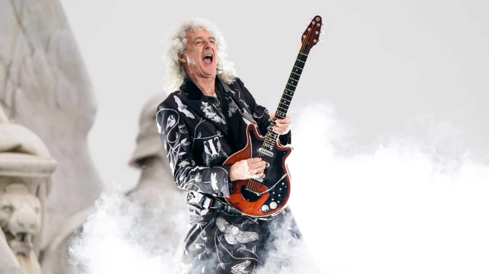

Um dos destaques na sonoridade do Queen é a guitarra de Brian May, a Red Special. Fabricada de forma caseira com o pai na década de 60, possui um timbre característico. Foi utilizada na maioria das canções da banda, e, juntamente com o amplificador caseiro de John Deacon, a Deacy Amp, foi a fonte de vários efeitos sonoros e emulações de instrumentos contidos, principalmente nos primeiros álbuns do Queen, como nas músicas "Procession" (Queen II) e "God Save the Queen" (A Night at the Opera). O músico também teve a ideia, até então inédita, de criar harmonias com várias camadas de guitarra, construindo uma sonoridade que, até os dias de hoje, é extensamente respeitada por guitarristas. A revista Rolling Stone o classificou como o 26º melhor guitarrista de todos os tempos. Numa enquete com votos do público, a revista Guitar World elegeu Brian como o segundo melhor guitarrista, atrás apenas de Eddie Van Halen.
